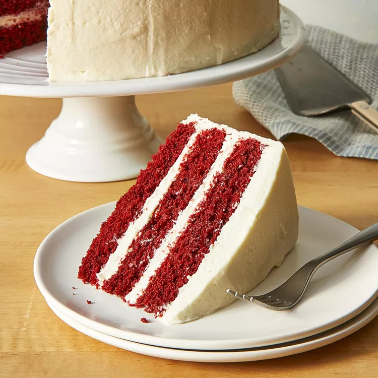

Southern Red Velvet Cake

Description
This is a delicious red velvet cake recipe that was taught to me by my grandmother. Made with a light and buttery frosting instead of the usual cream cheese. It's a little time consuming but totally worth the effort!
Ingredients
- ½ cup shortening
- 1 ½ cups white sugar
- 2 eggs
- 1 teaspoon vanilla extract
- 1 teaspoon butter flavored extract
- 3 tablespoons cocoa powder
- ½ ounce red food coloring
- 2 ½ cups all-purpose flour
- 1 cup buttermilk
- 1 teaspoon salt
- 1 teaspoon baking soda
- 1 tablespoon distilled white vinegar
- 3 tablespoons all-purpose flour
- ½ teaspoon salt
- 1 cup milk
- ½ cup butter
- 1 cup white sugar
- ½ cup shortening
- 2 teaspoons vanilla extract
- 2 teaspoons butter flavored extract
Directions
- Preheat an oven to 350 degrees F (175 degrees C). Grease and flour three 10 inch round pans.
- Cream 1/2 cup of shortening, 1 1/2 cups of white sugar, eggs, 1 teaspoon of vanilla extract, and 1 teaspoon of butter flavored extract in a large bowl. Make a paste of cocoa and food coloring in a small bowl and add to shortening mixture. Pour in 2 1/2 cups flour alternately with the buttermilk, mixing until just incorporated. Mix 1 teaspoon of salt, baking soda, and vinegar in a small bowl, and while fizzing fold into the batter; mixing just enough to evenly combine. Pour the batter into prepared pan.
- Bake in the preheated oven until a toothpick inserted into the center comes out clean, 20 to 25 minutes. Cool in the pans for 10 minutes before removing to cool completely on a wire rack.
- To make frosting: Cook 3 tablespoons of flour, 1/2 teaspoon of salt, and milk in a skillet over low heat, stirring constantly, until thick. Let cool completely. Cream butter, 1 cup sugar, and 1/2 cup shortening in a separate bowl. Stir in 2 teaspoons each of vanilla extract and butter flavored extract. Then add flour mixture to bowl and cream together. Frost cooled cake.